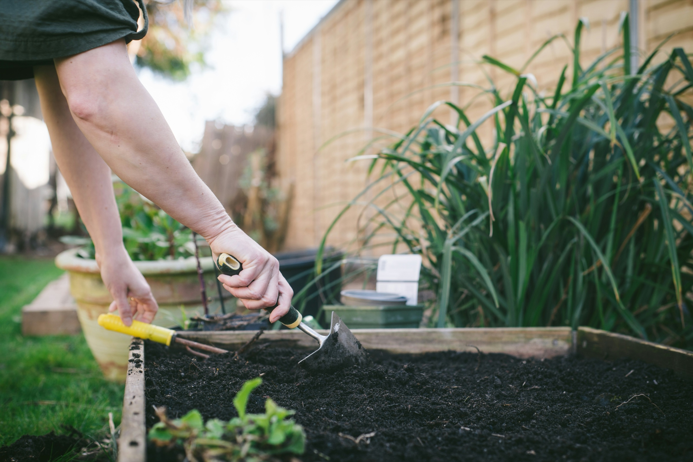
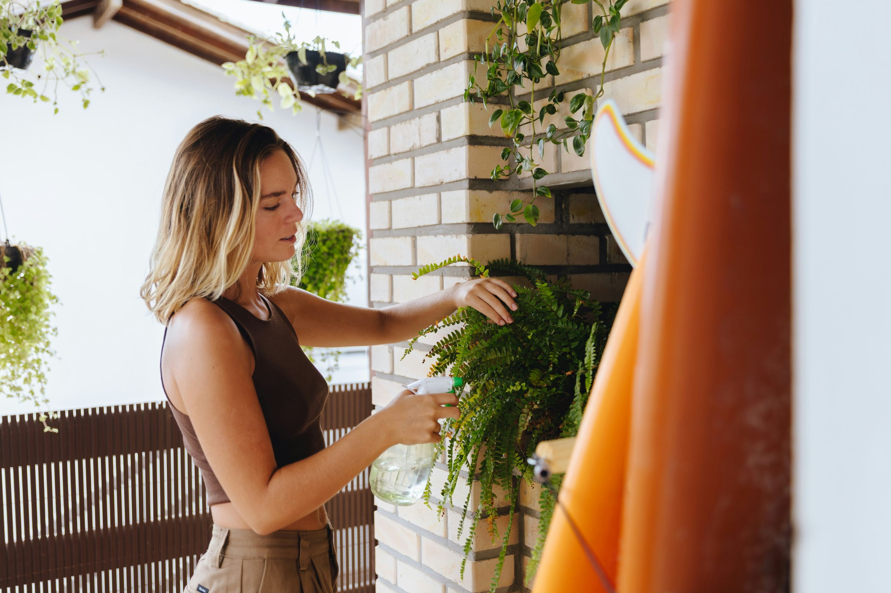
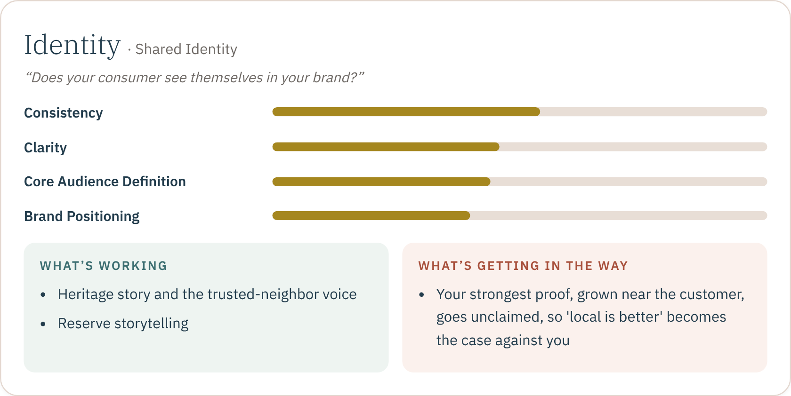
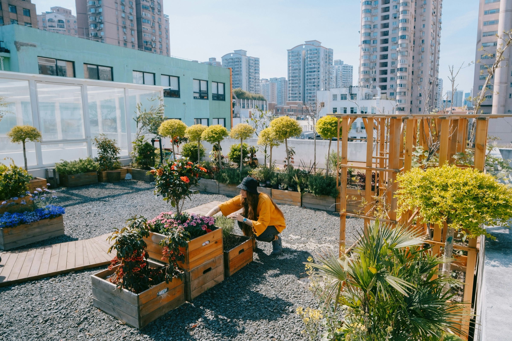
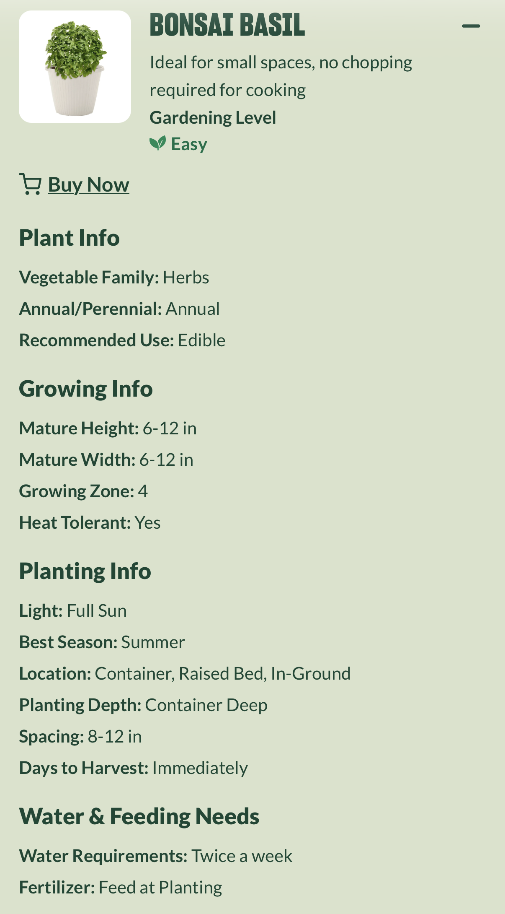
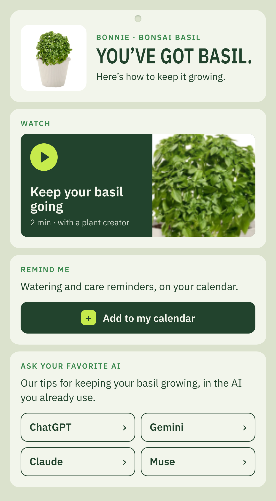
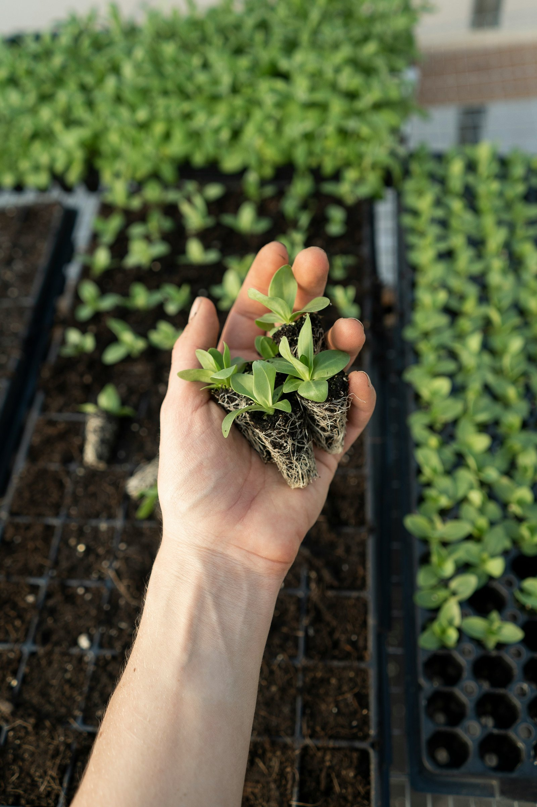
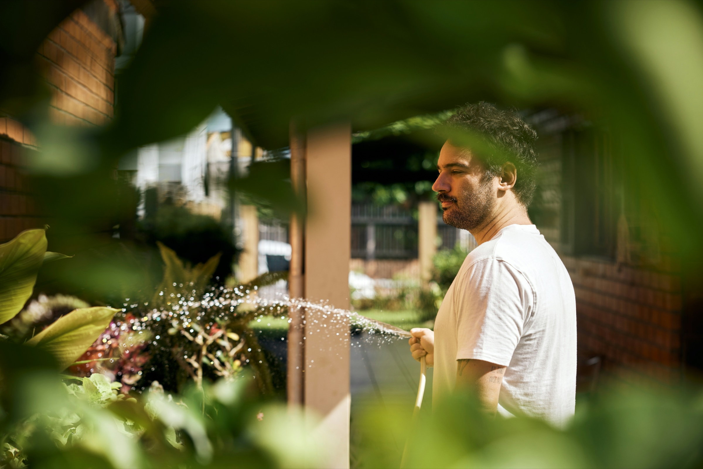

A brand refresh for Bonnie Plants
Marketers who garden. Kind of.
If we were Bonnie tomatoes…

John
CEO
Better Boy
Michael
Creative Director
Sunset Torch

Kelli
Strategy & Insights
Golden Jubilee
John
CEO
Better Boy
“I keep the team balanced.”
Michael
Creative Director
Sunset Torch
“If it doesn’t look good on the plate, we’re not done.”
Kelli
Strategy & Insights
Golden Jubilee
“All meat, no filler. That’s the job with insights.”

Your turn.
If you could wave your magic wand and change one thing about the Bonnie brand going forward, what would it be?
Our time together
01
Intros
02
The Opportunity Ahead
03
Building Consumer Preference
04
Brand Refresh Approach
05
Consumer Connection & Experience
06
Growing Together



The
Opportunity
Ahead
02
Here’s what we heard.
What we heard
Welcome new gardeners. Keep the loyal ones.
What we’re assuming
New gardeners need confidence first.
Why now
The business has moved ahead of the brand.
The shift
From
Your trusted partner for growing fresh food at home.
To
The trusted live-goods lifestyle brand for every gardener.
From seed to sprout.
The evolution of Bonnie Plants
Trustworthy
Lifestyle
Health and wellness
Local
Empowering
From seed to sprout.
The evolution of Bonnie Plants
Trustworthy
Lifestyle
Health and wellness
Local
Empowering

Heritage in its personality.

Modern in how it fits people’s lives.
What success
looks like
Build brand relevance
Inspire Casual Gardeners
Create portfolio clarity
Expand beyond culinary plants
Enable execution
Work across channels, earn internal adoption
Strategically distinctive
Operationally scalable
Practical to activate
Where healthy living takes root.
Beauty at home
Stress relief
More than food

Our research
so far
10
casual gardener interviews
22
store visits in 8 markets
68
beginner questions put to Google and 5 AI tools, with Bonnie’s site checked against the same questions
3,164
reviews and comments from four retailers, Reddit and Facebook
437
Bonnie-tagged creator posts from 219 accounts, compared with Burpee and Proven Winners
Just covered: Your goals, success criteria, evaluation lens
Up next:
Building Consumer Preference
Meet Ella
“I would not call myself a gardener. I would call myself a lover of gardens.”
“When I’m in new places, new cities, that’s definitely a landmark I like to seek out.”
“Exploring different wildlife preserves, gardens, even peeking over other people’s gardens as if I’m on a walk.”
“But I don’t currently have my own garden. So I wouldn’t call myself a current gardener, but I do love gardens.”
Ella, casual gardener
Reciprocity
The best relationships are based on reciprocity.
Winning brands act as genuine partners to their consumers.
Three connectors. One reciprocal relationship.
Identity
Connection
Experience
Do they see themselves in Bonnie?
Is Bonnie seen, or helpful?
Does every touchpoint reduce doubt?
Consumer Preference

For Bonnie, it starts with Identity.
What customers say, what they find, what the brand says about itself.
“I would not call myself a gardener, or an active gardener.”
Colin
“I don’t have any plants in my apartment and haven’t grown anything in a while.”
Colin
“I would not call myself a gardener currently.”
Michelle
“I have had a garden in the past when I was a kid.”
Michelle
“I live in an apartment now, and I don’t really have the space, like the outdoor space, to have a garden.”
Michelle
“No. I feel like to be a gardener, you have to have a garden to show people that you would be proud of.”
Kendall
“If I told people I was a gardener, then they would ask me for advice. And I don’t know anything.”
Kendall
“I don’t really consider myself a gardener now, but would like to in the future.”
Reagan
“I think it’s fun to say that I garden, but I don’t know if I classify myself as a gardener.”
Isabella
They won’t call themselves gardeners.
Handed down
Now, they ask AI
A head start
‘I grew that’
Identity first
One promise the Casual Gardener can believe.
Just covered: Why reciprocity, who Bonnie 2.0 is for
Up next:
Brand Refresh Approach
The branding process, mapped to your phases
Define + Discover
Discovery, Opportunity
Develop the Brand
Foundation, Character, Identity
Enable + Activate
Identity rollout, guidelines, templates, website, GTM across the sub-brands
One process, start to finish.
Opportunity
Define the space. Identify where the brand can stand apart.
Foundation
Define the core. Clarify the ideas that guide every brand decision.
Character
Shape the voice. Set the tone, style, and personality.
Identity
Make it visible. Translate strategy into design and language.
Your phases. Our process.
Define + Discover
Discovery
Opportunity
Build on what we’ve both learned
Develop the Brand
→
Foundation
Character
Identity
Enable + Activate
→
Identity rollout
Guidelines
Templates
Website
Go-to-market across the sub-brands
Opportunity
Foundation
Character
Identity
Opportunity
Find where Bonnie can stand apart in its category.
Brand architecture
How each sub-brand drives growth
How Bonnie shows up across them
Brand architecture
Diagram: brand architecture
Opportunity
Foundation
Character
Identity
Landscape
The brands around Bonnie.
Rivals
Substitutes
Benchmarks
Landscape
Rivals
Logos
Substitutes
Logos
Benchmarks
Logos
Area of opportunity
The open space for the brand in today’s marketplace.
Open space
Axis
Axis
Axis
Axis
Brand opportunity
Opportunity
Foundation
Character
Identity
Foundation
Set the ideas behind every design decision.
Position: Idea, Audience, Archetype
Story: Vision, Promise, Belief
Platform: Values, Actions, Personality
Messaging
Position, Story, Platform
Position
Where the brand sits in the world.
Idea
The intention that drives your business.
Audience
People and attitudes you connect with.
Archetype
Your universal cultural symbols.
Story
Why the brand matters.
Vision
The results of your successful efforts.
Promise
Your commitment to your audience.
Belief
The truth behind your brand.
Platform
How the brand shows up.
Values
Core principles that guide you.
Actions
How your brand benefits your audience.
Personality
Your voice and communication style.
Messaging
Body copy. Two or three sentences that explain the headline in plain words.
Messaging example
Opportunity
Foundation
Character
Identity
Character
Explore directions across visual and verbal cues.
Two exploratory mood boards
Nothing gets designed until we land on the right direction.

Direction one
Direction two
What stays and what changes
Protect
Identity elements, hat icon, color, heritage
Evolve in steps
Dropping “Plants” first
Logo today
Logo, step 1
Opportunity
Foundation
Character
Identity
Identity
Expand the direction into a full identity system.
Logo iterations
Color, type, icons, photo, illustration, voice
Identity system
Color
Type
Icons
Photo
Illustration
Voice
Imagery
Plants as they grow and the people who grow them. AI stays behind the scenes.
Image: imagery
Image: Boxbox work
Boxbox
Brand framework and identity
Image: Campminder work
Campminder
Brand architecture
Just covered: What we’d protect and how the identity evolves
Up next:
Consumer Connection & Experience
Meet Kendall
“Not a lot of people are targeting new gardeners.”
“There’s not a lot of instructions on the packets.”
Kendall, casual gardener
Where Bonnie shows up.
Is Bonnie seen, or helpful? Does it reduce doubt, or add to it?

Before the shelf
Thrive where beginners look

At the shelf
Flourish where they choose

After the shelf
Grow past the first failure
Before the shelf
Thrive where beginners look
Seen, or helpful?
Rarely seen while beginners are learning.
Reduce doubt, or add to it?
The sources people land on raise doubt about Bonnie.
At the shelf
Flourish where they choose
Seen, or helpful?
On the shelf in season, with no one telling its story.
Reduce doubt, or add to it?
Shoppers are often left to figure it out alone.
After the shelf
Grow past the first failure
Seen, or helpful?
Care content isn’t packaged for the casual gardener.
Reduce doubt, or add to it?
There’s too much to take in, so care starts to add stress rather than reduce it.
Ideas worth growing.
Before the shelf
The inspo and the answer, wherever beginners ask.
Website beginner prompt library
Creators who rank in search
Bonnie’s resident gardener
Thrifted planters
At the shelf
Give people a reason to choose Bonnie.
Signage with a reason
Bonnie van
Bonnie growers shop the stores on camera
Perks you can plant
After the shelf
Help that keeps plants growing & the gardeners going.
Text assistant, plus zip and zone reminders
The “is it dead” plant hotline
Little hands, big harvest
Customer care on social
After the shelf: the QR on the pot
Today
Plant specs and a buy link.

After the shelf: the QR on the pot
Our idea
Care help, right from the pot.

Just covered: Where the brand shows up, ideas throughout the journey
Up next:
The people who will guide you through this
Your team at Parallel Path
Kelli
Associate Director, Integrated Strategy & Insights
John
CEO

Maddie
Project Manager
Michael
Creative Director
Amanda
Vice President, Client Experience & Integrated Strategy
Willow
Senior Director of Media Operations
Julia
Associate Director of Client Strategy
Working your way.
Rhythm
Weekly or biweekly check-ins, set by you.
Tools
We join your Slack or Teams, SharePoint and project boards.
Methods
Working sessions and quick reviews that fit your team.
Care instructions for the brand.
Aligned
Your decision makers stay aligned through each decision.
Adopted
Build understanding, adoption and momentum inside Bonnie.
Ideas for your internal launch
SharePoint intranet
Internal podcast
Monthly Harvest email
Quarterly town halls
Let’s touch soil together.
An in-person kickoff, where you’re based
Farm visits to your growing stations
Store visits together

What we covered.
Everything from this session on one page
Research leave-behind
SOW leave-behind
Plant it now. Grow toward $500M.
